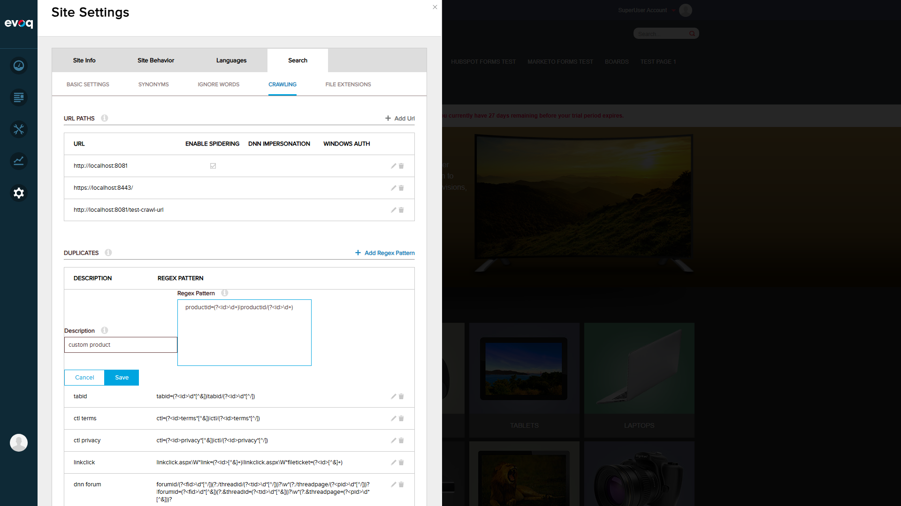

Test Scenarios
PASS Scenario 1: Navigation to Duplicate Patterns Configuration
Steps:
- Navigate to http://localhost:8081
- Log in as superuser (host/Pass123456)
- Open Site Settings panel
- Navigate to Search tab > Crawling sub-tab
- Locate the Duplicates section
Result: Successfully navigated to the Duplicates configuration section within the Crawling settings.

Figure 1: Crawling tab showing URL Paths and Duplicates sections with regex patterns
PASS Scenario 2: Pattern Configuration Loading from XML
Steps:
- Review patterns displayed in the Duplicates section
- Compare with patterns defined in SearchSpiderDuplicatePatterns.xml
- Verify all core and optional patterns are loaded
Result: All patterns from the XML configuration file are correctly loaded and displayed in the UI.
| Description | Regex Pattern | Purpose |
|---|---|---|
| tabid | tabid=(?<id>\d*[^&])|tabid/(?<id>\d*[^/]) |
Identifies unique pages by tab ID |
| ctl terms | ctl=(?<id>terms*[^&])|ctl/(?<id>terms*[^/]) |
Handles terms control URLs |
| ctl privacy | ctl=(?<id>privacy*[^&])|ctl/(?<id>privacy*[^/]) |
Handles privacy control URLs |
| linkclick | linkclick.aspx\W*link=(?<id>[^&]+)|linkclick.aspx\W*fileticket=(?<id>[^&]+) |
Handles file download links |
| dnn forum | forumid/(?<fid>\d*[^/])(?:/threadid/(?<tid>\d*[^/]))?... |
Forum thread URLs |
| dnn blog | entryid=(?<id>\d*[^&])|entryid/(?<id>\d*[^/]) |
Blog entry URLs |
| multilanguage | language=(?<id>\w*-?\w*[^&]?)|language/(?<id>\w*-?\w*[^/]) |
Language-specific URLs |
PASS Scenario 3: Add Custom Duplicate Pattern (UI Test)
Steps:
- Click "Add Regex Pattern" button
- Enter description: "custom product"
- Enter regex pattern:
productid=(?<id>\d+)|productid/(?<id>\d+) - Click Save button
- Verify pattern appears in the list
Result: Custom pattern was successfully added and appears in the duplicates list.

Figure 2: Add Regex Pattern form with Description and Regex Pattern fields

Figure 3: Custom pattern form filled with "custom product" pattern
PASS Scenario 4: Verify linkclick.aspx URL Handling
Steps:
- Verify linkclick pattern exists in the configuration
- Review code handling for linkclick.aspx URLs
- Confirm special tabid removal logic is implemented
Result: The linkclick pattern is present and the code includes special handling to remove unnecessary "tabid" parameters from linkclick.aspx URLs.
Code Behavior: When a URL contains "linkclick.aspx", the spider removes the "tabid" parameter before checking for duplicates. This prevents the same file from being indexed multiple times when accessed from different pages.
PASS Scenario 5: URL Normalization - Consecutive Slashes
Steps:
- Review code implementation for URL normalization
- Verify SpiderUriRegex pattern removes consecutive slashes
- Confirm normalization is applied before duplicate checking
Result: The spider correctly normalizes URLs by removing consecutive slashes using the regex pattern //+.
// From Spider.cs:231-241
if (urlToSpider.Substring(8).Contains("//"))
{
var newUrl = urlToSpider.Substring(0, 8) + SpiderUriRegex.Replace(urlToSpider.Substring(8), "/");
if (newUrl != urlToSpider)
{
urlToSpider = newUrl;
uri = new Uri(urlToSpider);
}
}
PASS Scenario 6: Complete Pattern List Verification
Steps:
- Scroll through the complete duplicates list
- Verify all patterns are displayed with edit/delete controls
- Confirm the newly added custom pattern is persisted
Result: All 13 patterns are displayed correctly including the newly added "custom product" pattern.

Figure 4: Complete list of duplicate patterns including custom "custom product" pattern